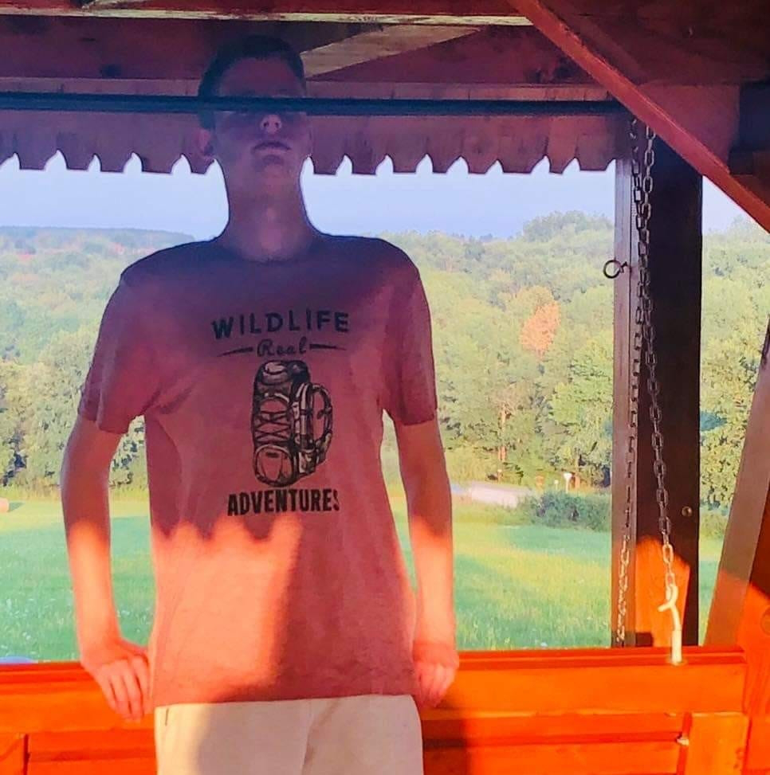
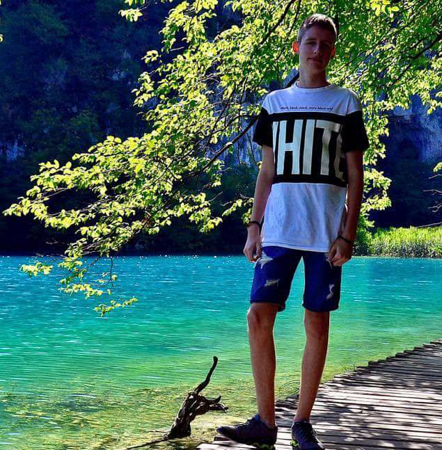

Fülöp-Szépe Botond vagyok a Budapesti Műszaki és Gazdaságtudományi Egyetem Gépészmérnöki karának hallagtója. Előtte tanulmányaimat a Budapest VI. Kerületi Kölcsey Ferenc Gimnáziumban folytattam a francia kéttannyelvű tagozaton. Sokáig nem tudtam milyen irányba induljak el, hogy mi is az amivel foglalkozni akarok. Az segített a döntésben, hogy az ismeretségi körömben sokan vannak, akik gépészmérnöki diplomával rendelkeznek és mégis mennyire más területen dolgoznak. Tetszett, hogy ez a szakma ennyire sokrétű, így hát eldöntöttem, hogy mérnöki irányba tervezek tovább tanulni.

